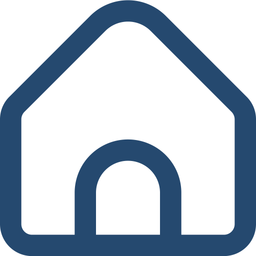

Email: saniadhar2005@gmail.com
Mobile: +91 7029621526
Address: 124/5 Ashokenagar, North 24 Pgs.
2023 - Present
B.P. Poddar Institute of
Management & Technology
BCA - 1st Year
2021 - 2023
Ashokenagar Adarsha Balika Vidyalaya (H.S.)
Higher Secondary - 89.4%
2020 - 2021
Ashokenagar Adarsha Balika Vidyalaya
Secondary - 92%
Graphic Design
Web Development
C Progranning
HTML
CSS
Book Reading
Watching Movies
Art and Craft
Listening music
2024 March - Present
FreeHulancer - Intern Graphic Designer
At Freehulancer I work as
a junior Graphic Designer my work there is to design Thumbneils and Reel covers for our clients.
2023 December - 2024 February
GraspGross - Intern Graphic Designer
At GraspGross I
worked as a Social Media Graphic Designer. I designed social media posts, and carousels for them for
a their all social media profiles.
Ultratech Download Page Clone - HTML & CSS
Responsive Website supports Desktop, Tab also
Mobile. Used flexbox and grid to make the website responsive.
Github Repositary
Live
Link
Fruit Home Page Design - HTML & CSS
Responsive Website supports both vertical and
horizontal devices.
Github Repositary Live Link